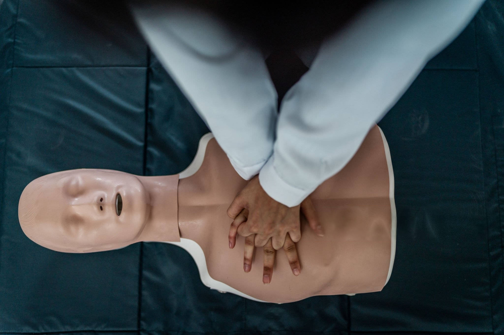

La formation professionnelle connaît une véritable révolution numérique. Les dispositifs pédagogiques modernes combinent désormais des séquences d'apprentissage à distance, en mode synchrone et asynchrone, pour offrir une expérience enrichissante aux apprenant-e-s.
Conception pédagogique

Formation SST et incendie - Sauveteur-se Secouriste au Travail

Formation transport de marchandises


Manageuse de transition - Directrice des opérations de transport
Mes engagements
- Approche progressive adaptée à tous les niveaux
- Expertise sur les outils phares du marché
- Formation synchrone en distanciel
- Méthodologies éprouvées pour créer des contenus visuels percutants
- Accompagnement personnalisé pour améliorer vos compétences numériques

Qui suis-je ?
Je suis Christina, conceptrice pédagogique et formatrice expérimentée dans le domaine du transport routier de marchandises et SST (Sauveteur-se Secouriste au Travail). Forte de mes triples compétences en pédagogie, animation et en transport, je vous accompagne dans la formation, ainsi que dans la conception de formations innovantes et sur-mesure.

Un métier, une explication !
A travers ce podcast, je vous présente une de mes activités :
Conception pédagogique, formation SST et incendie, formation transport de marchandises ou direction des opérations de transport.
C’est une manière pour moi de prendre du recul, de transmettre ce que j’apprends sur le terrain, et de mettre en lumière des sujets qui me tiennent à cœur.
Un épisode, une thématique, une parole libre et engagée.